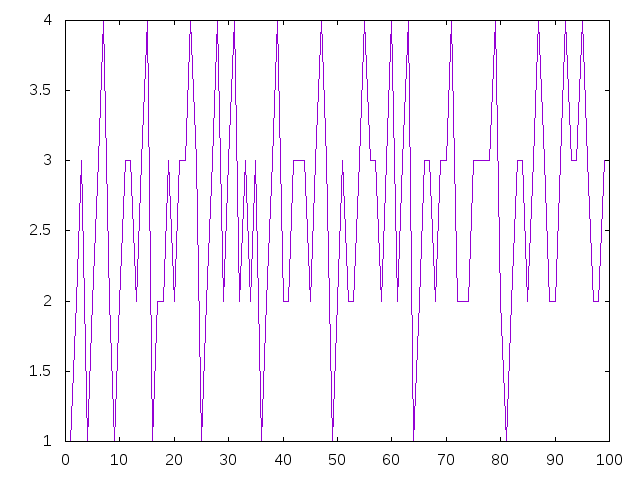

Número de sumandos en suma de cuadrados
El teorema de Lagrange de los cuatro cuadrados asegura que cualquier número entero positivo es la suma de, como máximo,cuatro cuadrados de números enteros. Por ejemplo,
16 = 4² 29 = 2² + 5² 14 = 1^2 + 2^2 + 3^2 15 = 1^2 + 1^2 + 2^2 + 3^2
Definir las funciones
ordenLagrange :: Integer -> Int graficaOrdenLagrange :: Integer -> IO ()
tales que
- (ordenLagrange n) es el menor número de cuadrados necesarios para escribir n como suma de cuadrados. Por ejemplo.
ordenLagrange 16 == 1 ordenLagrange 29 == 2 ordenLagrange 14 == 3 ordenLagrange 15 == 4 ordenLagrange 10000 == 1 ordenLagrange 10001 == 2 ordenLagrange 10002 == 3 ordenLagrange 10007 == 4
- (graficaOrdenLagrange n) dibuja la gráfica de los órdenes de Lagrange de los n primeros números naturales. Por ejemplo, (graficaOrdenLagrange 100) dibuja

Comprobar con QuickCheck que. para todo entero positivo k, el orden de Lagrange de k es menos o igual que 4, el de 4k+3 es distinto de 2 y el de 8k+7 es distinto de 3.
Soluciones
import Data.Array (Array, (!), array) import Graphics.Gnuplot.Simple import Test.QuickCheck -- 1ª definición -- ============= ordenLagrange :: Integer -> Int ordenLagrange n | esCuadrado n = 1 | otherwise = 1 + minimum [ ordenLagrange (n - x^2) | x <- [1..raizEntera n]] -- (esCuadrado x) se verifica si x es un número al cuadrado. Por -- ejemplo, -- esCuadrado 25 == True -- esCuadrado 26 == False esCuadrado :: Integer -> Bool esCuadrado x = (raizEntera x)^2 == x -- (raizEntera n) es el mayor entero cuya raíz cuadrada es menor o igual -- que n. Por ejemplo, -- raizEntera 15 == 3 -- raizEntera 16 == 4 -- raizEntera 17 == 4 raizEntera :: Integer -> Integer raizEntera = floor . sqrt . fromIntegral -- 2ª definición -- ============= ordenLagrange2 :: Integer -> Int ordenLagrange2 n = (vectorOrdenLagrange n) ! n vectorOrdenLagrange :: Integer -> Array Integer Int vectorOrdenLagrange n = v where v = array (0,n) [(i,f i) | i <- [0..n]] f i | esCuadrado i = 1 | otherwise = 1 + minimum [ v ! (i - j^2) | j <- [1..raizEntera i]] -- Comparación de eficiencia -- ========================= -- La comparación es -- λ> ordenLagrange 50 -- 2 -- (10.39 secs, 1,704,144,464 bytes) -- λ> ordenLagrange2 50 -- 2 -- (0.01 secs, 341,920 bytes) -- Definición de graficaOrdenLagrange -- ================================== graficaOrdenLagrange :: Integer -> IO () graficaOrdenLagrange n = plotList [ Key Nothing , PNG ("Numero_de_sumandos_en_suma_de_cuadrados.png") ] (map ordenLagrange2 [0..n-1]) -- Comprobación de la propiedad -- ============================ -- La propiedad es prop_OrdenLagrange :: Positive Integer -> Bool prop_OrdenLagrange (Positive k) = ordenLagrange2 k <= 4 && ordenLagrange2 (4*k+3) /= 2 && ordenLagrange2 (8*k+7) /= 3 -- La comprobación es -- λ> quickCheck prop_OrdenLagrange -- +++ OK, passed 100 tests.